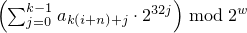

A mersenne_twister_engine random number engine272 produces unsigned integer random numbers in the closed interval [0,2w-1]. The state xi of a mersenne_twister_engine object x is of size n and consists of a sequence X of n values of the type delivered by x; all subscripts applied to X are to be taken modulo n.
The transition algorithm employs a twisted generalized feedback shift register defined by shift values n and m, a twist value r, and a conditional xor-mask a. To improve the uniformity of the result, the bits of the raw shift register are additionally tempered (i.e., scrambled) according to a bit-scrambling matrix defined by values u, d, s, b, t, c, and ℓ.
The state transition is performed as follows:
Concatenate the upper w-r bits of Xi-n with the lower r bits of Xi+1-n to obtain an unsigned integer value Y.
With α = a · (Y bitand 1), set Xi to Xi+m-n xor (Y rshift 1) xor α.
The sequence X is initialized with the help of an initialization multiplier f.
The generation algorithm determines the unsigned integer values z1, z2, z3, z4 as follows, then delivers z4 as its result:
Let z1 = Xi xor (( Xi rshift u ) bitand d).
Let z2 = z1 xor ( (z1 lshiftw s) bitand b ).
Let z3 = z2 xor ( (z2 lshiftw t) bitand c ).
Let z4 = z3 xor ( z3 rshift ℓ ).
template<class UIntType, size_t w, size_t n, size_t m, size_t r,
UIntType a, size_t u, UIntType d, size_t s,
UIntType b, size_t t,
UIntType c, size_t l, UIntType f>
class mersenne_twister_engine{
public:
// types
using result_type = UIntType;
// engine characteristics
static constexpr size_t word_size = w;
static constexpr size_t state_size = n;
static constexpr size_t shift_size = m;
static constexpr size_t mask_bits = r;
static constexpr UIntType xor_mask = a;
static constexpr size_t tempering_u = u;
static constexpr UIntType tempering_d = d;
static constexpr size_t tempering_s = s;
static constexpr UIntType tempering_b = b;
static constexpr size_t tempering_t = t;
static constexpr UIntType tempering_c = c;
static constexpr size_t tempering_l = l;
static constexpr UIntType initialization_multiplier = f;
static constexpr result_type min() { return 0; }
static constexpr result_type max() { return 2w - 1; }
static constexpr result_type default_seed = 5489u;
// constructors and seeding functions
explicit mersenne_twister_engine(result_type value = default_seed);
template<class Sseq> explicit mersenne_twister_engine(Sseq& q);
void seed(result_type value = default_seed);
template<class Sseq> void seed(Sseq& q);
// generating functions
result_type operator()();
void discard(unsigned long long z);
};
The following relations shall hold: 0 < m, m <= n, 2u < w, r <= w, u <= w, s <= w, t <= w, l <= w, w <= numeric_limits<UIntType>::digits, a <= (1u<<w) - 1u, b <= (1u<<w) - 1u, c <= (1u<<w) - 1u, d <= (1u<<w) - 1u, and f <= (1u<<w) - 1u.
The textual representation of xi consists of the values of Xi-n, …, Xi-1, in that order.
explicit mersenne_twister_engine(result_type value = default_seed);
Effects: Constructs a mersenne_twister_engine object. Sets X-n to value mod 2w. Then, iteratively for i = 1-n,…,-1, sets Xi to [f · (Xi-1 xor (Xi-1 rshift (w-2)) ) + i mod n ] mod 2w .
Complexity: Ο(n).
template<class Sseq> explicit mersenne_twister_engine(Sseq& q);
Effects: Constructs a mersenne_twister_engine object. With k = ⌈ w / 32 ⌉ and a an array (or equivalent) of length n · k , invokes q.generate(a+0, a+n · k) and then, iteratively for i = -n,…,-1, sets Xi to . Finally, if the most significant w-r bits of X-n are zero, and if each of the other resulting Xi is 0, changes X-n to 2w-1 .
The name of this engine refers, in part, to a property of its period: For properly-selected values of the parameters, the period is closely related to a large Mersenne prime number.